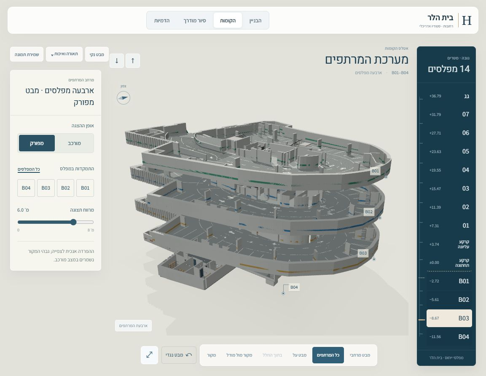
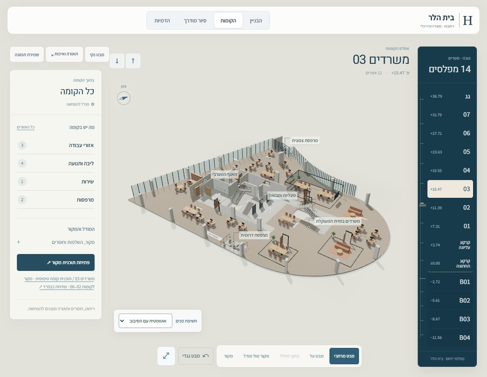
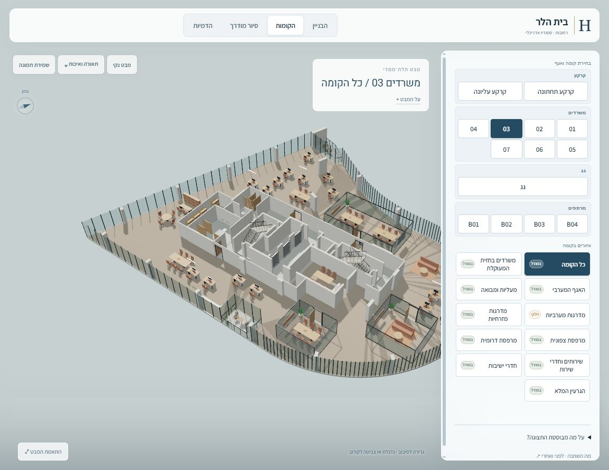
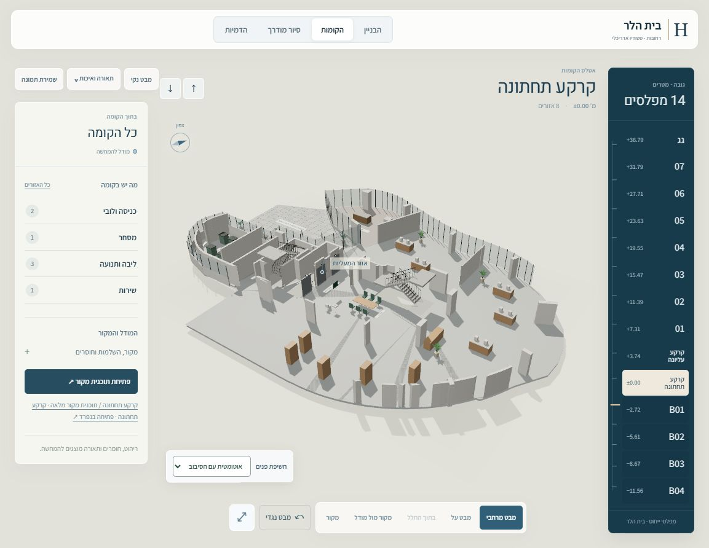
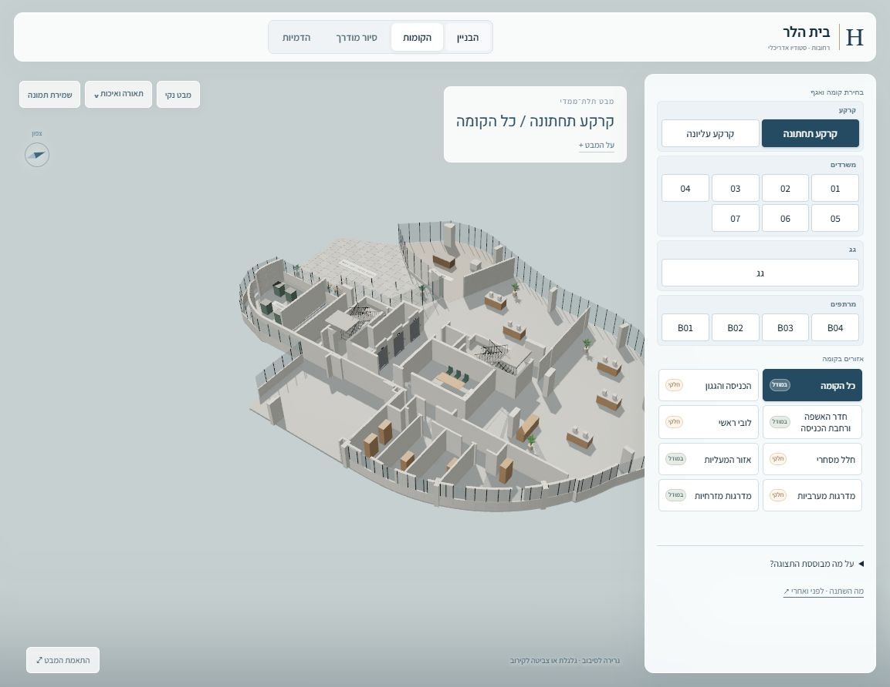

הקומה במרכז
ניווט בין 14 קומות ו־127 יעדים, עם בחירת אזורים במודל ומעבר למבט על או לתוך החלל.
אטלס הקומות · מהדורה 06
14 קומות ו־127 יעדים בממשק שמחבר בין המרחב, המפלסים ותוכניות המקור.
מבט מרחבי, כניסה לחלל והשוואה לתוכנית — מתוך אותו מודל.

מה השתנה
ניווט בין 14 קומות ו־127 יעדים, עם בחירת אזורים במודל ומעבר למבט על או לתוך החלל.
מעבר בין תצורה מורכבת למפורקת, התמקדות במפלס ושינוי המרווח לצפייה. גבהי המקור נשמרים במצב מורכב.
10 תמונות מקור מלאות מכסות את 14 הקומות. אפשר להגדיל את התוכנית ולהשוות אותה למודל באותו מסך.
התוצאה על המסך
גררו את הקו על התמונה.
אפשר גם להשתמש בסרגל ובמקשי החצים.
מבט מרחבי גדול, סימונים עדינים והצללה מתוקנת. תיקון ההצללה הוחל על כל שבע קומות המשרדים.


הקומה מקבלת מקום מרכזי, עם בחירת אזורים במרחב, מבט על וגישה ישירה לתוכנית המקור.


גם בתוך המודל
נוספו במבואה וברמפת השירות ב־B04 ובקרקע העליונה, כולל שני פודסטים ושלוש מדרגות.
לבדוק במודלגבולות המידע
פער של 17 ס״מ בין מקורות B04 עדיין דורש הכרעה. המרחב האחורי בקרקע והחיבור למרתפים טרם הוכרעו.
תקרה בגובה 3.05 מ׳ היא הצעה בלבד. החומרים והריהוט נועדו להמחשה.